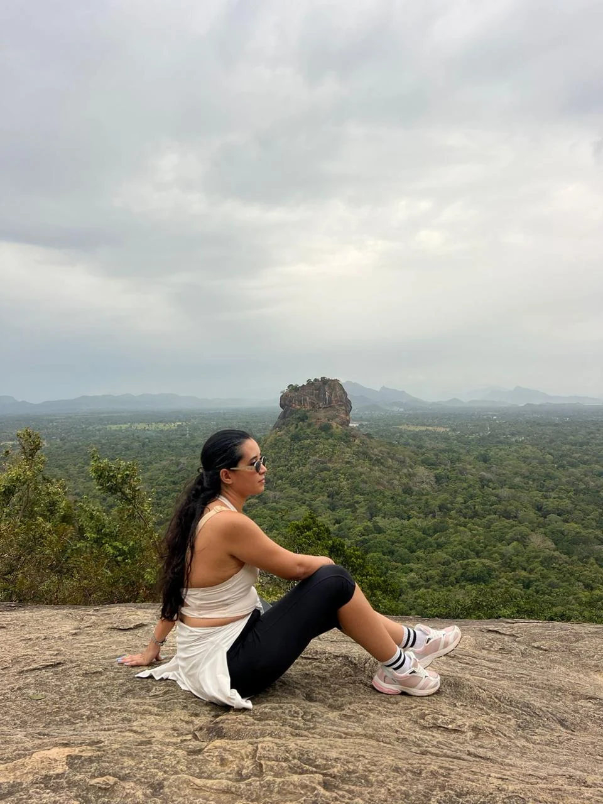
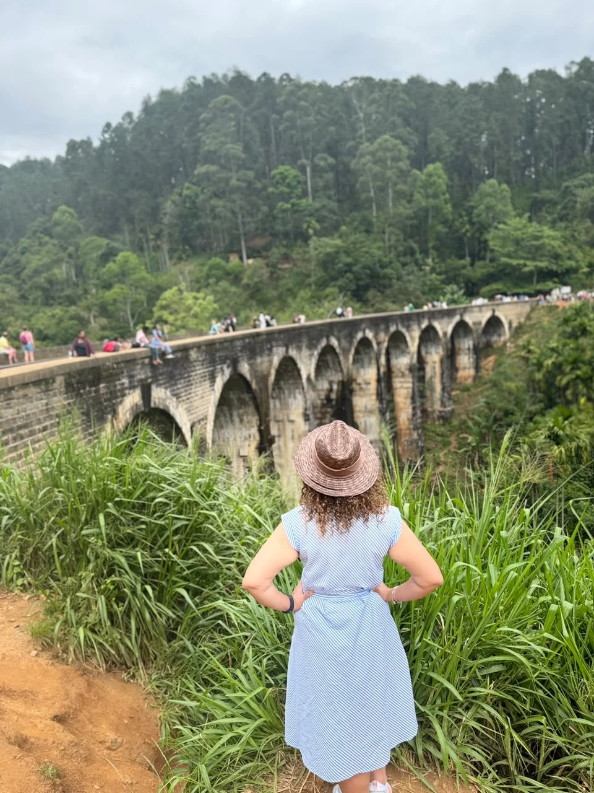
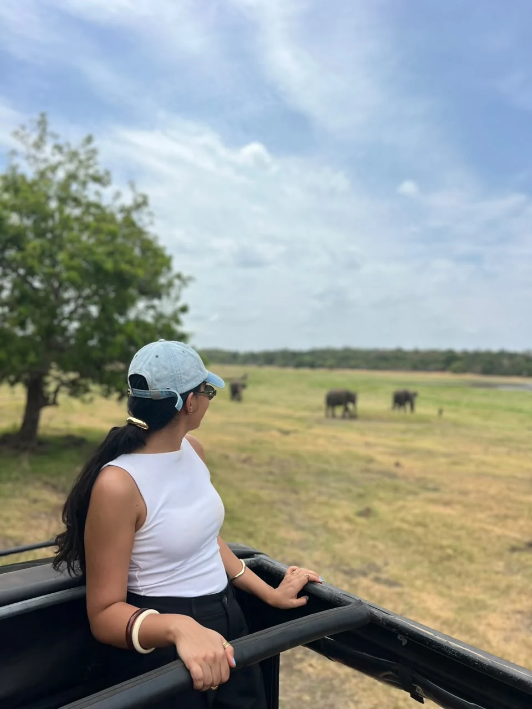
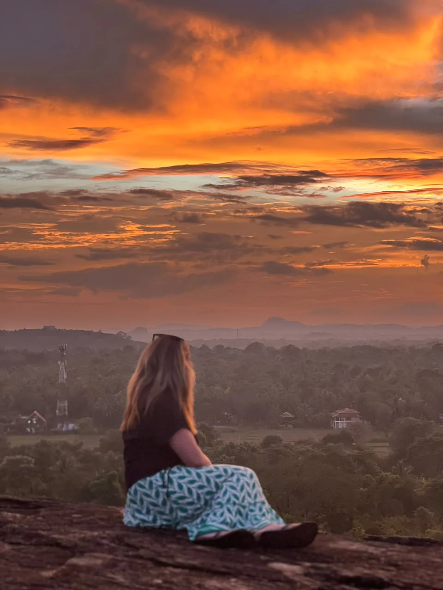
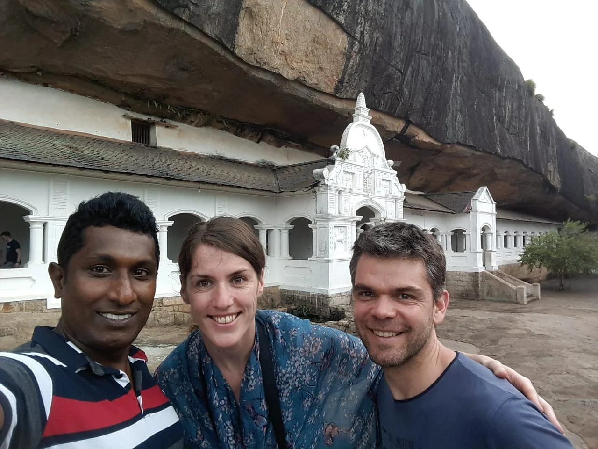
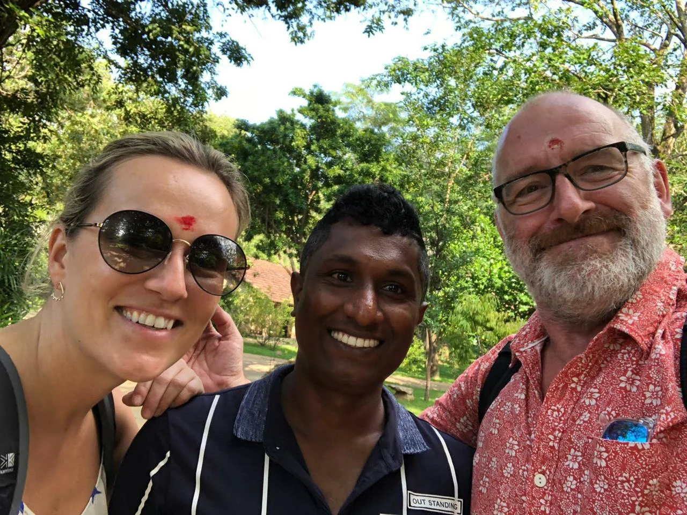
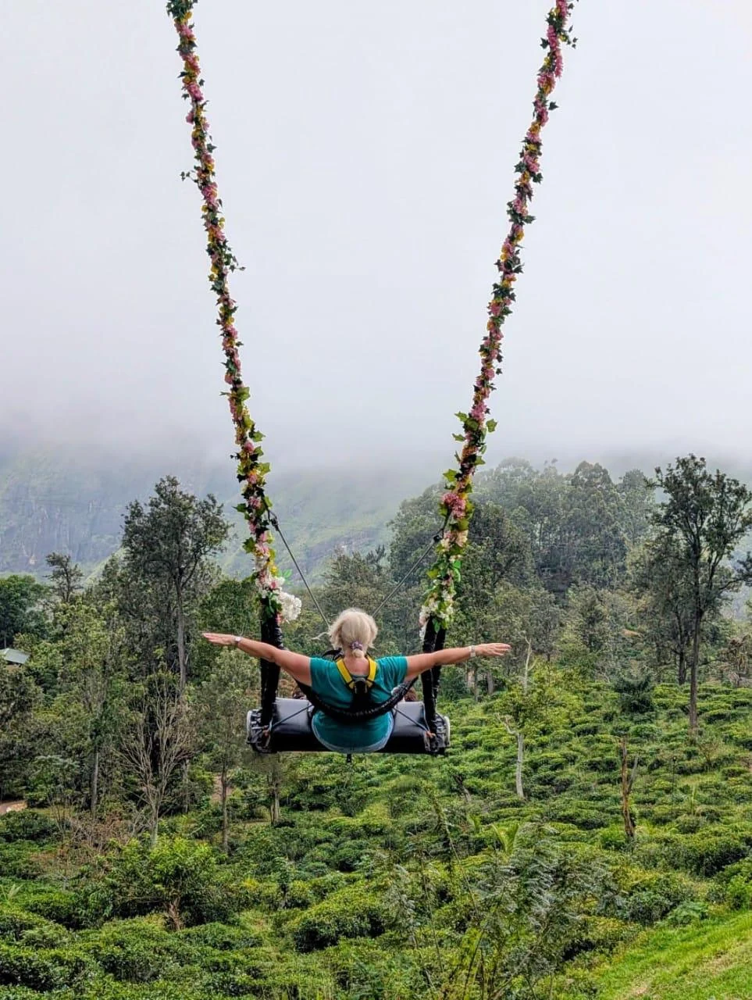

Island highlights0110-Day Sri Lanka Highlights Tour
Experience the best of Sri Lanka in 10 days, combining ancient heritage, Sigiriya, Kandy, misty tea hills, Ella, wildlife safaris, and southern beaches.
View full itinerary
Explore our island highlights, cultural journeys, east coast adventures and romantic honeymoon escapes. Contact our team to discuss your preferred itinerary and a personalized quote.

Island highlights01Experience the best of Sri Lanka in 10 days, combining ancient heritage, Sigiriya, Kandy, misty tea hills, Ella, wildlife safaris, and southern beaches.

Culture & nature02Explore deeper into the island's culture and nature with an extended private journey through historic capitals, tea estates, and coastal gems.

At a relaxed pace03Discover the wonders of ancient Anuradhapura, Polonnaruwa, Sigiriya, hill-country landscapes, wildlife reserves, and tropical shores at a relaxed pace.

Grand island discovery04The ultimate island discovery covering ancient kingdoms, Trincomalee's east coast beaches, Pasikuda, Kandy, Nuwara Eliya, Ella, and the entire southern coastline.

Ancient heritage05Discover the ancient heart of Sri Lanka from Kandy, featuring Anuradhapura, Polonnaruwa, Sigiriya Rock Fortress, Dambulla Cave Temple, and an elephant safari.

Coast & adventure06Experience the tropical east coast, Trincomalee, Nilaveli, Pasikuda, Arugam Bay surfing, Kumana wildlife safari, and hill-country tea estates.

Romantic escape07A romantic balance of culture, misty mountains, scenic train views, luxury stays, and beach relaxation designed for couples.
Plan your holiday with confidence. Speak directly with Nadika and the team about your preferences.
Get in touchYes. Our private itineraries are designed around your travel dates, interests and preferred pace, with the flexibility to discuss daily stops with your chauffeur guide.
Choose Comfort (3-Star), Premium (4-Star), or Luxury (5-Star / Boutique) in your inquiry. The team will discuss handpicked stays that match your preferences.
Our transparent pricing covers private air-conditioned transport, fuel, highway charges and parking. Your quote will set out the arrangements and inclusions for your chosen itinerary.
Complete the trip planner with your dates, group size and preferences. Review your prepared inquiry, then send it through WhatsApp or email to discuss your free custom itinerary quote.
Share your travel dates, group size, and preferences with us, and let our experts build a tailor-made private tour package just for you.
Hello! Tell Nadika about your Sri Lanka trip or ask a question.